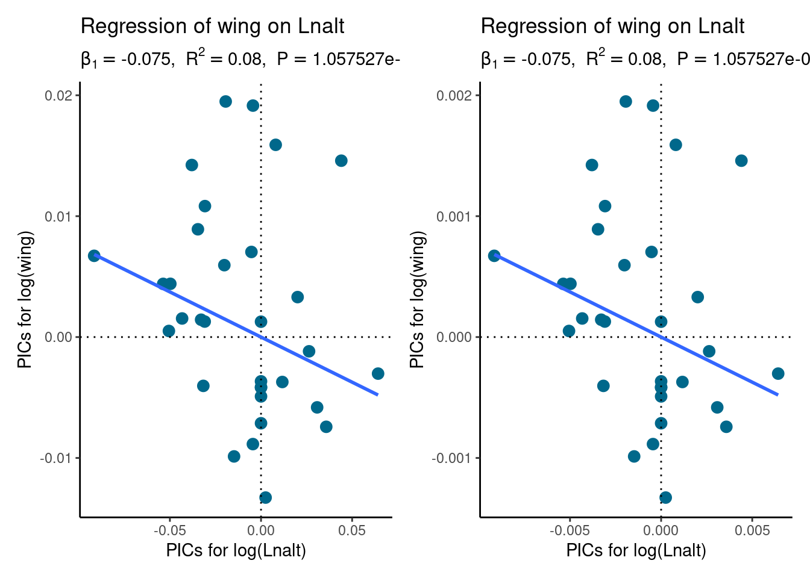

set.seed(123) # for reproducibility
library(phytools)
library(ape)
library(ggplot2)
library(patchwork)2 Phylogenetically independent contrasts
Loading required packages:
2.1 Practice problems
- Repeat your PIC analysis comparing body mass and home range but for only one clade in your tree: the artiodactyls. Use
extract.clade()to pull out this taxon from your tree of mammals. Do the results and conclusions of your analysis change? If so, in what way?
# Loading data
mammalHR <- read.csv(
"http://www.phytools.org/Rbook/2/mammalHR.csv", row.names = 1
)
mammal_tree <- read.tree("http://www.phytools.org/Rbook/2/mammalHR.phy")
# Visualize the tree to see the node number for Artiodactyla
plotTree(mammal_tree, ftype = "i")
nodelabels(bg = "white", cex = 0.5, frame = "circle")# Extract Artiodactyla (node 75)
artio_tree <- extract.clade(mammal_tree, node = 75)
artio_tree
Phylogenetic tree with 24 tips and 23 internal nodes.
Tip labels:
L._guanicoe, C._dromedarius, G._camelopardalis, S._caffer, B._bison, T._oryx, ...
Rooted; includes branch lengths.# Subset the phenotypic data to include only Artiodactyla species
artio <- mammalHR[artio_tree$tip.label, ]
head(artio) bodyMass homeRange
L._guanicoe 95 0.5
C._dromedarius 550 100.0
G._camelopardalis 1075 84.6
S._caffer 620 138.0
B._bison 865 133.0
T._oryx 511 87.5# Get home range and bodty mass as named vectors
home_range <- setNames(artio$homeRange, rownames(artio))
home_range L._guanicoe C._dromedarius G._camelopardalis S._caffer
0.500 100.000 84.600 138.000
B._bison T._oryx G._granti G._thomsonii
133.000 87.500 20.000 5.300
A._cervicapra M._kirki O._americanus O._canadensis
6.500 0.043 22.750 14.330
H._equinus A._melampus C._taurinus D._lunatus
80.000 3.800 75.000 2.200
A._buselaphus A._americana C._canadensis D._dama
5.000 10.000 12.930 1.300
A._alces R._tarandus O._virginianus O._hemionus
16.100 30.000 1.960 2.850 body_mass <- setNames(artio$bodyMass, rownames(artio))
body_mass L._guanicoe C._dromedarius G._camelopardalis S._caffer
95.00 550.00 1075.00 620.00
B._bison T._oryx G._granti G._thomsonii
865.00 511.00 62.50 20.50
A._cervicapra M._kirki O._americanus O._canadensis
37.50 5.00 113.50 85.00
H._equinus A._melampus C._taurinus D._lunatus
226.50 53.25 216.00 130.00
A._buselaphus A._americana C._canadensis D._dama
136.00 50.00 300.00 55.00
A._alces R._tarandus O._virginianus O._hemionus
384.00 100.00 57.00 74.00 # Compute PICs for home range and body mass
pic_homerange <- pic(log(home_range), artio_tree)
pic_bodymass <- pic(log(body_mass), artio_tree)
pic_homerange 25 26 27 28 29 30
-0.132818999 -0.895579093 0.346980350 0.297202240 0.746576874 0.076100243
31 32 33 34 35 36
0.008252110 -0.721206564 1.236975670 0.128802627 0.593911038 0.004718204
37 38 39 40 41 42
0.163415879 0.620547958 -0.361695665 1.025369793 -0.310301482 0.070369259
43 44 45 46 47
-0.221826585 0.812177874 0.247172062 0.824430561 -0.264722763 pic_bodymass 25 26 27 28 29 30
0.03008134 -0.29682517 0.42423891 0.17467000 0.61117696 0.06264270
31 32 33 34 35 36
-0.07446331 -0.50642256 0.46686415 -0.01303527 0.49852763 -0.07722967
37 38 39 40 41 42
0.10223052 0.19076822 -0.35642941 0.15952743 -0.01705392 -0.17261385
43 44 45 46 47
-0.01519233 0.59978540 0.54363400 0.14003343 -0.18456465 # Fit linear model to PICs without intercept
pic_model <- lm(pic_homerange ~ pic_bodymass + 0)
summary(pic_model)
Call:
lm(formula = pic_homerange ~ pic_bodymass + 0)
Residuals:
Min 1Q Median 3Q Max
-0.53191 -0.15261 0.00455 0.14829 0.79675
Coefficients:
Estimate Std. Error t value Pr(>|t|)
pic_bodymass 1.4331 0.2154 6.653 1.09e-06 ***
---
Signif. codes: 0 '***' 0.001 '**' 0.01 '*' 0.05 '.' 0.1 ' ' 1
Residual standard error: 0.3302 on 22 degrees of freedom
Multiple R-squared: 0.668, Adjusted R-squared: 0.6529
F-statistic: 44.26 on 1 and 22 DF, p-value: 1.091e-06# Visualizing the model
p_pics <- data.frame(
Home_range = pic_homerange,
Body_mass = pic_bodymass
) |>
ggplot(aes(x = Body_mass, y = Home_range)) +
geom_point(size = 3, color = "deepskyblue4") +
geom_vline(xintercept = 0, linetype = 3) +
geom_hline(yintercept = 0, linetype = 3) +
geom_smooth(method = "lm", se = FALSE, formula = "y ~ x") +
labs(
title = "Regression of home range on body size for Artiodactyla",
subtitle = "Regression was performed on phylogenetically independent contrasts (PICs)",
x = "PICs for log(body mass)",
y = "PICs for log(range size)",
) +
theme_classic()
p_picsResults and conclusions did not change.
- On the book website, we supply some data for a group of Asian barbets (
BarbetTree.nexandBarbetdata_mod.csv): members of the bird family Megalaimidae (Gonzalez-Voyer et al. 2013). Using these data and the method of phylogenetic independent contrasts, test for a relationship between the two variables Lnalt and wing. What do you find? How does the slope of your relationship change if you fit Lnalt wing versus wing Lnalt? How does the P-value of a statistical test of this relationship change?
# Get data
barbet <- read.csv(
"http://www.phytools.org/Rbook/2/Barbetdata.csv",
row.names = 1
)
barbet_tree <- read.nexus("http://www.phytools.org/Rbook/2/BarbetTree.nex")
# Take a look at the data
head(barbet) wing Lnalt patch colour
Calorhamphus_fuliginosus_fuliginosus 4.388257 5.298317 2.000000 1.666667
Calorhamphus_fuliginosus_hayi 4.427239 5.298317 2.000000 1.666667
M_armillaris 4.532599 7.170120 6.333333 4.000000
M_asiatica_asiatica 4.611152 6.802395 7.333333 5.000000
M_asiatica_davisoni 4.605170 7.003065 6.666667 3.333333
M_australis_duvaucelli 4.282206 6.620073 9.000000 4.000000
Frequency Length Lnote
Calorhamphus_fuliginosus_fuliginosus 20.468894 3.1207387 0.260
Calorhamphus_fuliginosus_hayi 22.483670 3.1371727 0.230
M_armillaris -7.135924 -11.9001412 0.030
M_asiatica_asiatica -10.153448 0.3671016 0.025
M_asiatica_davisoni -9.700025 0.4492719 0.030
M_australis_duvaucelli 1.206501 -2.5198843 0.030barbet_tree
Phylogenetic tree with 42 tips and 41 internal nodes.
Tip labels:
M_asiatica_asiatica, M_lineata_hodgsoni, M_australis_australis, M_haemacephala_intermedia, M_eximia, M_viridis, ...
Rooted; includes branch lengths.# Check tree and data for inconsistencies
check <- geiger::name.check(barbet_tree, barbet)
check$tree_not_data
[1] "M_asiatica_chersonesus" "M_australis_australis"
[3] "M_haemacephala_celestinoi" "M_haemacephala_delica"
[5] "M_haemacephala_intermedia" "M_haemacephala_rosea"
[7] "M_lineata_lineata" "M_oorti_faber"
[9] "M_oorti_sini"
$data_not_tree
character(0)barbet_tree <- drop.tip(barbet_tree, check$tree_not_data)
# Define function to fit regression on PICs for variables x and y
fit_pics <- function(tree, data, x, y) {
# Get variables as named vectors
var_x <- log(setNames(data[[x]], rownames(data)))
var_y <- log(setNames(data[[y]], rownames(data)))
# Compute PICs
pic_x <- pic(var_x, tree)
pic_y <- pic(var_y, tree)
# Fit linear model to PICs without intercept
pic_model <- summary(lm(pic_y ~ pic_x + 0))
# Get estimates
r2 <- signif(pic_model$r.squared, 1)
slope <- signif(pic_model$coefficients[1], 2)
p <- format(pic_model$coefficients[4], scientific = TRUE)
subtitle <- bquote(beta[1] == .(slope) * ", " ~ R^2 == .(r2) * ", " ~ P == .(p))
# Visualizing the model
p_pics <- data.frame(
X = pic_x,
Y = pic_y
) |>
ggplot(aes(x = X, y = Y)) +
geom_point(size = 3, color = "deepskyblue4") +
geom_vline(xintercept = 0, linetype = 3) +
geom_hline(yintercept = 0, linetype = 3) +
geom_smooth(method = "lm", se = FALSE, formula = "y ~ x") +
labs(
title = paste0("Regression of ", y, " on ", x),
subtitle = subtitle,
x = paste0("PICs for log(", x, ")"),
y = paste0("PICs for log(", y, ")")
) +
theme_classic()
p_pics
return(p_pics)
}
# Fit a regression of `wing` on `Lnalt` using PICs
model1 <- fit_pics(barbet_tree, barbet, "Lnalt", "wing")
# Fit a regression of `Lnalt` on `wing` using PICs
model2 <- fit_pics(barbet_tree, barbet, "wing", "Lnalt")
# Visualize plots together
wrap_plots(
model1, model2, ncol = 2
)In both models (regressing wing on Lnalt and regressing Lnalt on wing), there is no significant association association between the variables. The P-value and variance explained remain the same, but the slope (\(B_1\)) changes, which is expected considering that predictors and outcomes have been flipped.
- If you multiply all the branches of your phylogenetic tree by 100, will your independent contrasts analysis change? Why or why not? Can you confirm this using R code? Don’t forget to use what you learned about the internal structure of a “phylo” object in chapter 1 to modify your tree.
# Multiple all branches by 100
new_barbet_tree <- barbet_tree
new_barbet_tree$edge.length <- new_barbet_tree$edge.length * 100
# Compute PICs for `wing` using original and modified tree
original_pic_wing <- pic(
log(setNames(barbet$wing, rownames(barbet))), barbet_tree
)
modified_pic_wing <- pic(
log(setNames(barbet$wing, rownames(barbet))), new_barbet_tree
)
# Are PICs the same?
identical(original_pic_wing, modified_pic_wing)[1] FALSEhead(original_pic_wing) 34 35 36 37 38 39
-0.004037127 -0.004174157 -0.009872292 0.001271405 -0.004145402 0.019146160 head(modified_pic_wing) 34 35 36 37 38
-0.0004037127 -0.0004174157 -0.0009872292 0.0001271405 -0.0004145402
39
0.0019146160 # Perform regression of `wing` on `Lnalt` using both trees
original_model <- fit_pics(barbet_tree, barbet, "Lnalt", "wing")
modified_model <- fit_pics(new_barbet_tree, barbet, "Lnalt", "wing")
# Compare models
wrap_plots(original_model, modified_model)
The PICs change (PICs using the modified tree are the PICs of the original tree divided by 10), but the results of the regression using PICs do not change, because the relationship between the species (i.e., the tree topology) remained the same after multiplying branch lengths by 100.
References
Gonzalez-Voyer, Alejandro, R-J den Tex, Alberto Castelló, and Jennifer A Leonard. 2013. “Evolution of Acoustic and Visual Signals in Asian Barbets.” Journal of Evolutionary Biology 26 (3): 647–59.